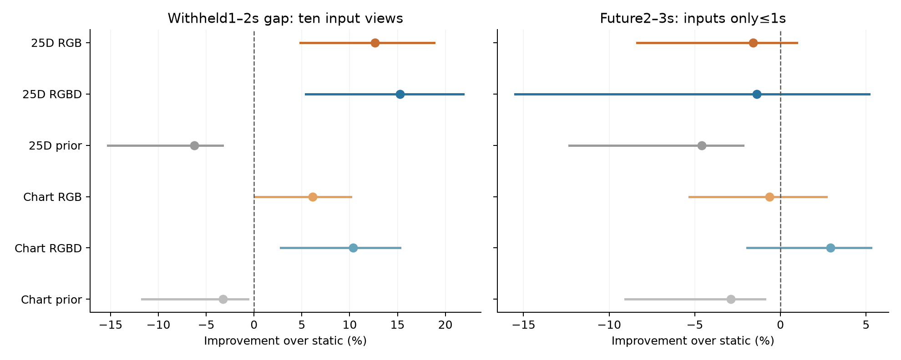
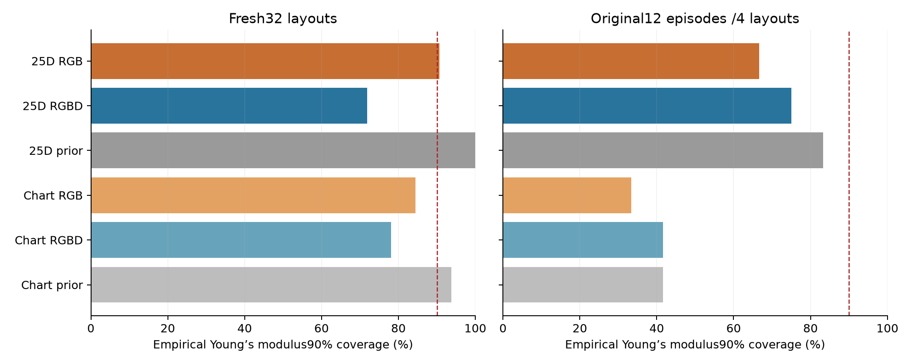

152 TRAIN episodes;44 VAL episodes. No predictive TEST evaluation is included.
The25D RGB/RGBD baselines improve the1–2s withheld gap. Only the depth-assisted chart model improves the2–3s future-window mean on this validation set, by2.93%; RGB-only future prediction remains worse than static. Surface/force constraints make hypotheses valid but do not establish parameter recovery or calibration.
All models use the same frozen neural Green teacher and known cuboid reference. Runtime is an observation encoder plus sampled physical hypotheses and a neural decoder: no FEM or per-video parameter optimization. RGBD explicitly uses measured depth and is a separate track.

Exploratory95% bootstrap intervals resample independent layouts within fresh/original strata; original material variants stay together. These VAL cases also selected checkpoints, so this is not confirmatory evidence. The original12 episodes comprise only4 layouts×3 material variants.
| Model | All44(mm) | Fresh32(mm) | Original12(mm) |
|---|---|---|---|
| Static | 1.229 | 1.093 | 1.592 |
| 25D RGB | 1.074 | 0.962 | 1.371 |
| 25D RGBD | 1.042 | 0.934 | 1.329 |
| 25D prior | 1.305 | 1.168 | 1.671 |
| Chart RGB | 1.154 | 1.054 | 1.418 |
| Chart RGBD | 1.102 | 0.999 | 1.375 |
| Chart prior | 1.268 | 1.137 | 1.618 |
| Model | All44(mm) | Fresh32(mm) | Original12(mm) |
|---|---|---|---|
| Static | 1.372 | 1.372 | 1.372 |
| 25D RGB | 1.394 | 1.405 | 1.363 |
| 25D RGBD | 1.391 | 1.414 | 1.330 |
| 25D prior | 1.435 | 1.432 | 1.443 |
| Chart RGB | 1.380 | 1.400 | 1.329 |
| Chart RGBD | 1.332 | 1.337 | 1.319 |
| Chart prior | 1.412 | 1.411 | 1.412 |

Pointwise coordinate coverage near90% cannot validate the inferred physical parameters. Force probabilities are often worse than the uniform4-class Brier score0.75. Mean support/load estimates remain wrong by several centimetres and force estimates by approximately the force scale. Original endpoint materials and fresh continuous material draws are reported separately.
| Model | E90% coverage | E MAE(kPa) | E interval width(kPa) | BC accuracy | Force accuracy | Force Brier↓ |
|---|---|---|---|---|---|---|
| 25D RGB | 90.6% | 4.00 | 18.69 | 43.8% | 28.1% | 0.863 |
| 25D RGBD | 71.9% | 4.22 | 18.13 | 50.0% | 18.8% | 0.921 |
| 25D prior | 100.0% | 4.22 | 20.40 | 25.0% | 25.0% | 0.750 |
| Chart RGB | 84.4% | 4.35 | 13.46 | 46.9% | 15.6% | 0.857 |
| Chart RGBD | 78.1% | 4.45 | 14.51 | 53.1% | 18.8% | 0.866 |
| Chart prior | 93.8% | 4.27 | 15.76 | 25.0% | 25.0% | 0.750 |
| Model | E90% coverage | E MAE(kPa) | E interval width(kPa) | BC accuracy | Force accuracy | Force Brier↓ |
|---|---|---|---|---|---|---|
| 25D RGB | 66.7% | 6.84 | 17.38 | 25.0% | 16.7% | 0.708 |
| 25D RGBD | 75.0% | 5.99 | 20.76 | 16.7% | 25.0% | 0.740 |
| 25D prior | 83.3% | 6.24 | 19.92 | 25.0% | 25.0% | 0.750 |
| Chart RGB | 33.3% | 6.32 | 13.40 | 25.0% | 33.3% | 0.728 |
| Chart RGBD | 41.7% | 6.10 | 13.58 | 33.3% | 16.7% | 0.702 |
| Chart prior | 41.7% | 6.33 | 15.54 | 25.0% | 25.0% | 0.750 |
Machine-readable validation summary · Sealed checkpoint identities · Predictive plot PDF · Coverage plot PDF